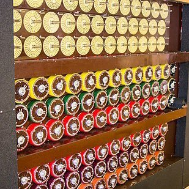

-
the grugq

The Grugq is a pioneering information security researcher with two decades of experience at almost every level of the field. He has worked extensively with threat intelligence, disinformation, digital forensic analysis, binary reverse engineering, rootkits, mobile phone security, Voice over IP, telecommunications and financial services security. The Grugq has been quoted and referenced routinely in The New York Times, Washington Post, Forbes, Wired, TechCrunch, BoingBoing, VICE and BBC News. Grugq’s quotes and insights are so frequently referenced at security conferences that he’s informally known as the “most quoted man in infosec.”
-
Dr. Pablo Breuer

Dr. Pablo Breuer is the chief information security officer (CISO) at Helm Services and is a 22-year veteran of the US Navy with tours including military director of US Special Operations Command Donovan Group and senior military advisor and innovation officer to SOFWERX, the National Security Agency, and US Cyber Command, Executive Director of the Center for Information Warfare and Innovation, and director of C4 at US Naval Forces Central Command. Pablo has been faculty at the Naval Postgraduate School, National University, and California State University, Monterey Bay, as well as a visiting scientist at Carnegie Mellon CERT/SEI. He is a founder and vice director of the Cognitive Security Collaborative and a primary author of the AMITT framework for countering misinformation.
-
Timo Steffens
Timo holds a PhD in Artificial Intelligence and has accumulated ten years of experience in incident handling and Threat Intelligence. He published articles on various topics and is the author of a book about attribution methods.
-
Silas Cutler
Silas Cutler is a security researcher with a focus on nation state attacks. Silas specializes in reverse engineering malware artifacts, threat hunting, and development of tools to track actor operations.
-
JD Work
JD Work is a former practitioner turned academic with over two decades experience working in cyber intelligence and operations roles for the private sector and US government. He continues research into hard problems of cyber warfighting and operational art, serving as the Bren Chair for Cyber Conflict and Security at the Marine Corps University. He holds additional affiliations with Columbia University’s School of International and Public Affairs, Saltzman Institute of War and Peace Studies, as well as George Washington University, Elliott School of International Affairs, and the Atlantic Council, Cyber Statecraft Initiative.
-
Dave Aitel
Cybersecurity Strategist